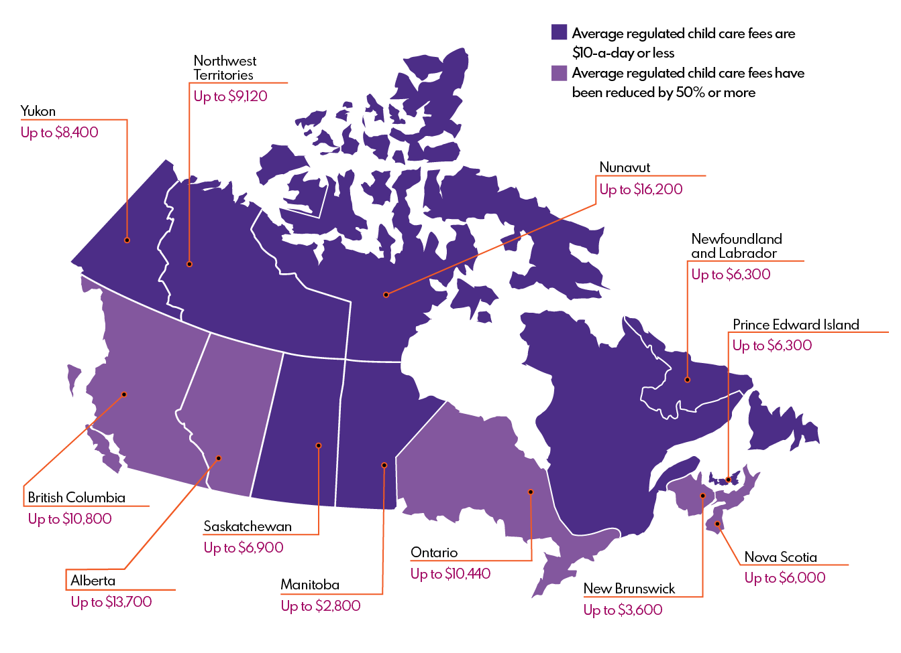

Canada is the second-largest country in the world by land area, known for its stunning natural landscapes, diverse culture, and strong economy. It is a bilingual nation with English and French as its official languages. Canada is home to vibrant cities like Toronto, Vancouver, and Montreal, as well as breathtaking natural wonders such as the Rocky Mountains, Niagara Falls, and the Northern Lights.
Canada is made up of 10 provinces and 3 territories, each with unique geography and culture. The provinces, such as Ontario, Quebec, and British Columbia, have more autonomy and are responsible for their own governance. The three territories—Yukon, Northwest Territories, and Nunavut—are largely governed by the federal government due to their lower populations and vast northern landscapes.
Alberta is a province in western Canada, known for its vast landscapes and natural resources. It is home to the Rocky Mountains, the prairies, and the oil sands, making it a key player in Canada's economy. The capital city is Edmonton, while Calgary is the largest city and a major business hub. Alberta is famous for Banff and Jasper National Parks, attracting millions of tourists every year.
Alberta observes several public holidays throughout the year, including New Year's Day, Family Day, Good Friday, Canada Day, Labour Day, and Christmas Day. These holidays provide opportunities for Albertans to celebrate and spend time with family and friends.
Alberta is home to some of Canada's most beautiful national and provincial parks, including Banff National Park, Jasper National Park, and Dinosaur Provincial Park. These parks offer a wide range of outdoor activities, from hiking and camping to wildlife viewing and photography.
Learn More About Canada's Provinces and Territories
Canada is made up of 10 provinces and 3 territories, each with unique geography and culture. The provinces, such as Ontario, Quebec, and British Columbia, have more autonomy and are responsible for their own governance. The three territories—Yukon, Northwest Territories, and Nunavut—are largely governed by the federal government due to their lower populations and vast northern landscapes.
- British Columbia
- Alberta
- Manitoba
- New Brunswick
- Newfoundland and Labrador
- Nova Scotia
- Ontario
- Prince Edward Island
- Quebec
- Saskatchewan
- Northwest Territories
- Nunavut
- Yukon
Public Holidays in Alberta
- New Year's Day - January 1
- Family Day - Third Monday in February
- Good Friday - Friday before Easter Sunday
- Easter Monday (for federal employees) - Monday after Easter Sunday
- Victoria Day - Monday preceding May 25
- Canada Day - July 1
- Heritage Day (optional) - First Monday in August
- Labour Day - First Monday in September
- National Day for Truth and Reconciliation - September 30 (federal holiday)
- Thanksgiving Day - Second Monday in October
- Remembrance Day - November 11
- Christmas Day - December 25
- Boxing Day (for federal employees) - December 26
Provincial Parks in Alberta
- Writing-on-Stone Provincial Park
- Dinosaur Provincial Park
- Elk Island National Park
- Fish Creek Provincial Park
- Peter Lougheed Provincial Park
- Sheep River Provincial Park
- William A. Switzer Provincial Park
- Lundbreck Falls Provincial Park
- Big Knife Provincial Park
- Castle Provincial Park
- Kinbrook Island Provincial Park
- Miquelon Lake Provincial Park
- Wabamun Lake Provincial Park
- Lesser Slave Lake Provincial Park
- Gregg Lake Provincial Park
